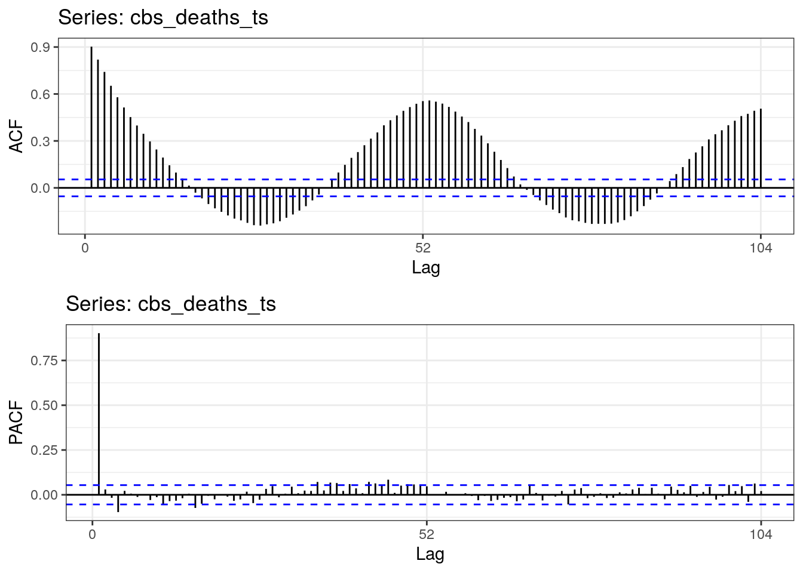

Estimating excess deaths with Kalman filter
Trond, Hans, Lenny
26.05
Figure 1: Descriptive plot

Figure 2: Totale en geregistreerde Corona-sterfte


Model
\[ \begin{aligned} &y_{t} = \alpha_{t} + \beta_{t} x_{t} + g_{t} + y_{t}^{ar} + v_{t} & v_{t} \sim N(0, \sigma_{v}^{2}) \\ &\alpha_{t} = \alpha_{t-1} + w_{\alpha, t} & w_{\alpha, t} \sim N(0, \sigma_{\alpha}^{2}) \\ &\beta_{t} = \beta_{t-1} + w_{\beta, t} & w_{\beta, t} \sim N(0, \sigma_{\beta}^{2}) \\ &g_{t} = \sum_{j=1}^{2} \left( a_{j} \cos \left( t \frac{2 \pi j}{52.18} \right) + b_{j} \sin \left( t \frac{2 \pi j}{52.18} \right) \right) + w_{g, t} & w_{g, t} \sim N(0, 0) \\ &y_{t}^{ar} = \phi y_{t-1} + w_{ar,t} & w_{ar,t} \sim N(0, \sigma_{ar}^{2}) \end{aligned} \]
Fitting procedure
- \(y_{t}\) is the weekly data on mortality from the CBS (series 70895ned), from 1995 to 2020 (week 20)
- \(x_{t}\) is weekly data (aggregated from daily series) on Corona-deaths as registered by the RIVM. Downloaded from the global database maintained by the Johns Hopkins institute.
- Lag order of \(y_{t}^{ar}\) and number of harmonics \(j\) in \(g_{t}\) determined by running several ARIMA models, selecting the number of lags and harmonics that minimises the AICc
- 5 unknown parameters (variances and \(\phi\)) estimated by maximum likelihood estimation
- Structural parameters (\(\alpha_{t}\), \(\beta_{t}\), parameters in \(g_{t}\)) estimated with (1) Kalman filter and (2) Kalman smoothing using singular value decomposition
| Parameter | Value |
|---|---|
| \(\sigma_{v}\) | 2.2295 |
| \(\sigma_{\alpha}\) | 6.8820 |
| \(\sigma_{\beta}\) | 0.1771 |
| \(\sigma_{ar}\) | 106.3487 |
| \(\phi\) | 0.8333 |
Figure 3: Standardised residuals

Figure 4: Filtering estimate (green), observed deaths (red), 95 percent prediction interval (grey)

Figure 5: Smoothing estimate (green), observed deaths (green), 95 percent confidence interval (grey)
Figure 6: Smoothing estimate of beta - dynamic
Figure 7: Smoothing estimate of beta - dummy
Figure 8: Smoothed alpha and observations -dynamic

Figure 9: Smoothed alpha and observations - dummy model

Figure 10: Actual (green) and expected (red) deaths in 2020
Figure 11: Deaths until week 20 in years 2013 - 2020. Grey lines years 2013 - 2019, black line 2020 (dotted line expected deaths) - Dynamic
Figure 12: Deaths until week 20 in years 2013 - 2020. Grey lines years 2013 - 2019, black line 2020 (dotted line expected deaths) - Dummy

Figure 13: Excess deaths

Figure 14: Excess Death (tom week 19)
Figure 15: Excess Deaths dynamic

Figure 16: Excess Death (tom week 19)
Figure 17: Economist Figure